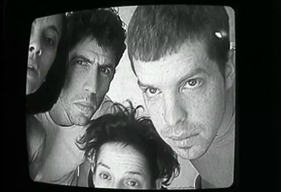
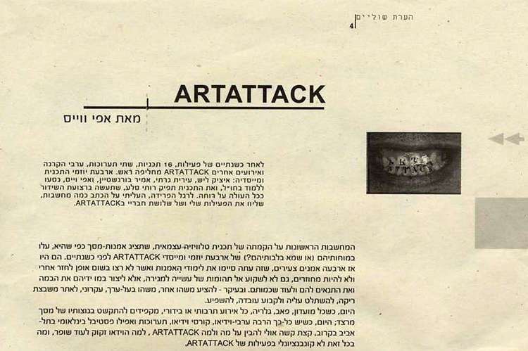

ארטאטאק
(Artattack)
אדם/קבוצה

מתוך הפתיח של התוכנית
חברי הקבוצה, עירית גרטי, איציק ליש, אפי ויס ואמיר בורנשטיין, בוגרים טריים של המחלקה לאמנות בבצלאל, רצו להקים חלל אמנות שיתופי אך מצאו שהמציאות מערימה עליהם קשיים בדרכם לכך. במקום זאת הם יסדו תכנית טלויזיה עצמאית ששודרה בערוצים המקומיים של חברות הכבלים ״ערוצי זהב״, ״תבל״, ״מתב״ וחברת הלווין ״יס״ – הלוויזיה הקהילתית. כך התקיימה במשך שנתיים תוכנית שבה שודר וידיאו ארט וסרטים ניסיוניים של אמנים שונים ביניהם אלי פטל, דורון סולומונס, אפי ואמיר, הדס עפרת, גיא בן נר, רונה יפמן ואחרים.
תוכנית מס' 12 של ארטאטק
ארטאטאק בגיליון 2 של מגזין "הערת שוליים" שיצא על ידי קבוצת סלה־מנקה
